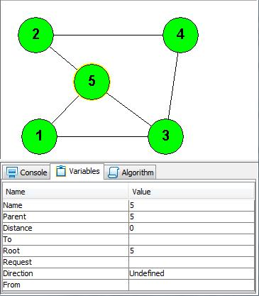
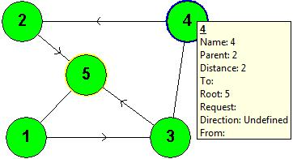
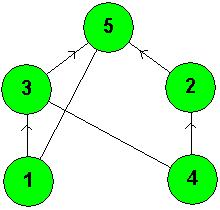

Yehuda Afek
Shay Kutten
Moti Yung
A self stabilizing protocol for constructing a rooted spanning tree in an arbitrary asynchronous network of processors that communicate through shared memory is presented. The processors have unique identifiers but are otherwise identical. The network topology is assumed to be dynamic, that is, edges can join or leave the computation before it eventually stabilizes.
The algorithm is design uses a new paradigm in self stabilization. The idea is to ensure that if the system is not in a legal state (this is a global condition) then a local condition of some node will be violated. Thus the new could restart the algorithm.
The algorithm provides an underlying self-stabilization mechanism and can serve as a basic building block in the construction of self stabilizing protocols for several other applications such as: mutual-exclusion, snapshot, and reset.
The algorithm is memory efficient in that it requires only a linear size memory of words of size log n (the size of an identity) over the entire network. Each processor needs a constant number of words per incident link, thus the storage requirement is in the same order of magnitude as the size of the traditionally assumed message buffers size. The adversary may be permitted to initiate the values of the variables to any size. Still, in this case the additional memory used by the algorithm is the amount stated above.
Extensions of our algorithm to other models are also discussed.
In order to build a network for simulating this algorithm, follow these steps:
An example for a network

An example for a network after a few steps were executed. You can note that there are nodes that already joined a tree (annotated by a directed arrow, pointing the parent node). Also, there are nodes that are participating in forwarding requests
The resulting spanning tree (also rearranged as a tree)

Rearranged as a tree ==>
